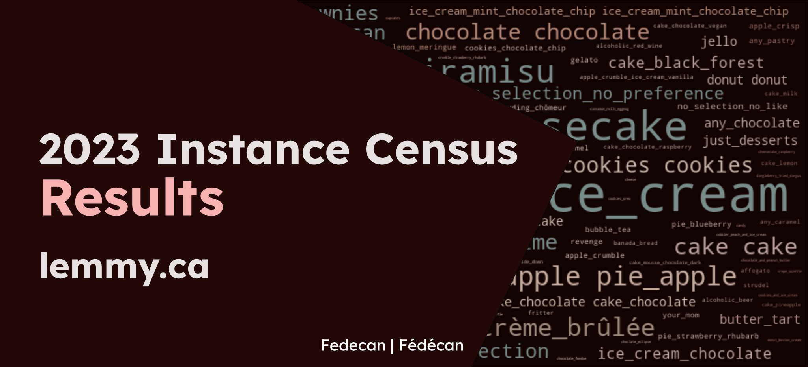

2023 Instance Census Results

This data was originally shared on Lemmy , and this blog post has been backdated to match the original post date. This page has improved visualizations that can take advantage of the website format. We hope you enjoy the updated version!
Corrections:
- Updated the total response count to 529
Visualizations
As we are using DataWrapper for the visualizations, you may want to switch to the light theme for better visibility. You can do this by clicking the sun or moon icons ( / ), next to the search bar above.
Thank you to everyone who took the time to fill out the census! This was an exciting year, and for a lot of users it was their first year on lemmy.ca (and the fediverse in general).
For this census, the questions were more open ended, and it ended up being much harder to do data cleaning and analysis. However, it worked well as the first census because it gave us insight into what we might want to do differently in the future.
The turnout was good, with 529 total responses in the 1 week that the census was open. That made up around 8% of the ~6500 total users on lemmy.ca, which feels like a nice sample size for some fun analysis.
To start off, here is a chart of the responses over time:

This one is pretty self explanatory, so moving on to the actual results!
Section 1: Where is everyone?
1.1: Where are you from?
This question was broken down into a few parts. Most users are from Canada:

Next we can see which province and territories are represented. If we compare to the population of Canada, this instance is somewhat consistent with the population distribution with some exceptions (if someone does a proper comparison, please share it! ). We have users from every province and territory, with the exception of Northwest Territories. The NWT community does have subscribers, so hopefully by next year we should have a response from there as well.

Next we can see where the users from the rest of the world are from:

Thanks for spending time on lemmy.ca everyone!
1.2: How big is your community?
The original question included two options (rural and urban), but a handful of users (13) entered “suburban” as a custom response. That could be something to add in the future.

However, what’s interesting is that our results are very similar to the proportions reported by Statistics Canada for the 2021 Canadian census. We had 82.8% urban, 14.7% rural, and 2.4% other, while the 2021 Canadian census reported ~82.15% urban and ~17.8% rural (source).
1.3: Quality of internet connection

To help those that don’t have excellent internet, you can do small things like reducing the size of images before uploading them.
Section 2: Who are you?
2.1: Age Distribution
There was a lot of interest in seeing the results for this question:

We can see a nice curve, with a peak around 30-39. So the average age on Lemmy is likely a bit older than other social media platforms, but there’s a good spread nonetheless.
2.2: Ethnicity
This was one of the questions that I couldn’t analyze the way I was originally planning to. While allowing for multiple responses and user submissions allowed for more accurate self-identified responses, it made it difficult to visualize the data in a meaningful way. This data deserves a more in depth analysis, but for now I opted to create a word cloud so we could get a sense of what the responses were like.
{kind=link}
See the note at the bottom on the potential for bias or misleading results. The following command was used to generate the graphic:
wordcloud_cli --text text.txt --imagefile wordcloud.png --prefer_horizontal 1 --width 720 --margin 10 --height 400 --colormask colormask.jpeg --random_state 5 --relative_scaling 0.4
Word Clouds
For the word clouds, we used this project to generate the graphics locally: amueller/word_cloud
2.3: Gender identity
With this question, we can see that a large proportion of users identify as ‘Man’ (441), followed by ‘Woman’ (32), ‘Non-Binary’ (25), ‘Genderfluid’ (3), and the remaining responses were custom responses (1).

This is something that could use more analysis and comparison as the instance continues to grow.
2.4: Trans experience
The question from the census was "Are you someone with trans experience (meaning your gender identity does not align with your sex assigned at birth)?". In case it is hard to see from the graph, the breakdown was ‘No’ (472 | 93.8%), ‘Yes’ (28 | 5.3%), and the rest of the responses were custom responses (4 | 0.9%).

You can see Canadian census data for ‘Sex at birth and gender’ here.
2.5: How do you identify?
Similar to the other question above, this question allowed for multiple responses and user submissions, so it was difficult to visualize the data in a meaningful way.
{kind=link}
See the note at the bottom on the potential for bias or misleading results. The following command was used to generate the graphic:
wordcloud_cli --text text.txt --imagefile wordcloud.png --prefer_horizontal 1 --width 720 --margin 10 --height 400 --colormask colormask.jpeg --random_state 6 --relative_scaling 0.55
2.6: Disability Status (optional)
As this was an optional question with free responses and a small number of responses overall, I opted to manually clean the results and list out details from the responses. Hopefully this is still useful while also respecting the privacy of the respondents.
See the full list of responses
- “ADHD”
- “anxiety”
- “ASD/autism”
- “AuDHD”
- “bipolar disorder”
- "BPD"
- “colorblind (protanomaly)”
- “depression”
- “difficulty processing information”
- “fibromyalgia”
- “health decline due to age/life experiences”
- “learning disability”
- “neurodivergence”
- “partial deafness”
- “PTSD”
- “sensory issues”
- “struggles with mental health”
- “vascular Ehlers-Danlos syndrome”
2.7: Educational Background
For this question, multiselect really didn’t make sense. Some users included everything, and others picked their highest level of education. Instead, I manually cleaned all the results to answer “What is your highest level of education?”. Other details that aren’t captured in the graph include entries that highlighted that the program was in progress, or that they dropped out. With that in mind, I had to make some choices about how to clean the data, and my choices may not reflect the original intent of the respondents.
Next time should be better, as we can split this into a few questions:
- Highest level of education achieved
- School is in progress?
We could keep the multiselect option since ‘highest level of education’ doesn’t get the full picture. We could also add “CÉGEP diploma”, “College diploma”, and “Other degree/diploma” as options.

Here are the raw counts for each of the original options:

2.8: Employment Status
We got a few custom responses, including ‘active duty military’, ‘disability’, etc. Those were included in the ‘other’ category, and we could add those options in the future.

View the percentage breakdown
- Employed Full-time: ~70.8%
- Employed Part-time: ~4.8%
- Self-Employed: ~7.1%
- Unemployed: ~6.7%
- Student: ~6.7%
- Homemaker: ~0.4%
- Retired: ~2.5%
- Other: ~1.0%
2.9: Field of Work
This question was… a mess to try and clean and display. I tried to collapse as many similar responses as I could, but it felt like I was making more mistakes than I was fixing:
{kind=link}
See the note at the bottom on the potential for bias or misleading results. The following command was used to generate the graphic:
wordcloud_cli --text text.txt --imagefile wordcloud.png --prefer_horizontal 1 --width 720 --margin 10 --height 400 --colormask colormask.jpeg --random_state 150 --relative_scaling 0.35
Section 3: Instance Usage
3.1: Community Participation
The question that was asked was "Approximately how many lemmy.ca communities do you participate in?".

3.2: Community Moderation
The question that was asked was "If you moderate any communities on lemmy.ca, how many do you moderate?".

In the future, this could be replaced with a number input field.
3.3: Community Requests
The question that was asked was "What community do you want to see on lemmy.ca?". Personal information was cut out and responses were split into multiple lines as appropriate.
While we will also look into these communities, you are free to (and encouraged) to look through this list and get them going 🚀
See the full list of requests (77 responses)
- amigurumi
- Analog photography
- anything urbanism, climate change, waste reduction/RE use etc related would be nice to have more activity
- Apple
- Birds, lots of birds
- Ottawa
- Author and book promotion help
- Batman
- DC comics
- bicycles
- binge eating disorder
- buildapcsales
- Canadian and local news
- Canadian Deals (software and other)
- Celeste community
- Chess
- Coffee
- Communities focued on discusison of specific video games, especially Paradox games and From The Depths
- fiction-writing and sharing communities
- dota2
- edmonton
- EMS
- Fibromyalgia or chronic illness communities
- Fine arts related
- First Nations-based communities
- French Canadian content
- FrugalCanada
- Furry
- gameboy verification. Those guyz were awesome and hard workers
- gaming sites
- more healthcare communities
- Hockey
- Hockey is a bit dead IMO
- HumansBeingBros
- I think you should leave
- Kamloops local
- knitting and similar things (crafts, etc.)
- Less with more. The main issue with federation is that there are several communities that cover the same topic. So you end up with fractured groups, or you participate in several communities that all have the same posts.
- Literary
- Loseit
- Maple Leafs
- Montreal
- More craft/art based communities
- more diverse communities
- movies
- nicevancouver
- Non-sided political discussion
- nursing
- personal finance canada
- personal finance canada
- plant and mineral identification communities
- poodles
- printsf
- privacy@lemmy.ca
- Quake Champions
- reading and/or viewing clubs, esp. for lesser known gems
- Reptiles!
- rupaulsdragrace (and variations)
- sasswitches
- Sleep apnea
- Snowboarding
- snowboarding
- Something link with cybersecurity and retro gaming
- Stocks
- superstonk
- Survivor
- Thoughtful conversation, although not very balanced currently.
- Unsolved mysteries
- Vancouver
- Vancouver
- Various fantasy literature ones
- villedequebec@lemmy.ca
- Wallpapers or art curation
- Wearable/smart_rings
- What is this thing
- witchesvspatriarchy
- worldnews
3.4: Time on Lemmy
The question that was asked was "On average, how much time do you spend on Lemmy each day?".

For the 28 people that said “>21 hours”, here is a video of a baby sea otter Joey taking a snooze. While we love to have you here, feel free to use this video while you take a break and get some rest: https://www.youtube.com/watch?v=JBVT8HWEahM
3.5: Desktop vs. Mobile
The question that was asked was "How do you access Lemmy most often?".

Not listed here were the following custom responses. Both of these could be added as options in the future:
- 3 submissions for “Tablet”
- 3 submissions for “Both about equally” (worded in different ways)
3.6: Desktop Interface Usage
The question that was asked was "On desktop, which interfaces do you use?". The default interface was the most popular, but each interface was preferred by some number of users.

3.7: Mobile OS
The question that was asked was "On mobile, which OS do you use?".

Not listed here were the following custom responses. We could clarify these options in the future.
- 1 submission for “GrapheneOS”
- 1 submission for “Debian”
- 1 submission for “None”
3.8: Mobile Interface Usage
The question that was asked was "On mobile, which app(s) do you use?". There were a few custom responses, which were included in the graph (Avelon, Artic, Lemmios, Lemmur, Bean.)

Not listed in the graph were the following custom responses. All of these could be added as options in the future.
- 22 submissions for “Web Browser” (worded in different ways)
- 4 submissions for “None”
There were also comments about the lack of tablet apps, so if you’re an app developer, this could be something to take a peek at 👀
3.9: Visitors from the Fediverse
The question that was asked was "If you primarily access lemmy.ca through different Lemmy/Kbin instance, please list it below (optional)".
Thanks for stopping by 😊

3.10: Other Fediverse Services
The question that was asked was "What other Fediverse services do you use?". There were a few custom responses, which were included in the graph (Matrix, Owncast, Hubzilla, Diaspora, GNU Social, Funkwhale, GoToSocial, Soapbox, Wordpress, pump.io).

Section 4
4.1: Just Desserts
The question that was asked was "First, what’s your favourite dessert?". Wow this one took a while to go through. Here are some interesting responses I collected while cleaning (sorry if I lost yours before thinking to do this):
Interesting responses
"Anything that has Reese peanut butter cups/pieces in it. Reese is love. Reese is life."
"brownies although I just had some gingerbread men that were pretty bussin"
"hard to say. just made some very tasty eggnog cinnamon rolls though"
"Either jello formed from the tears of my enemies, or tiramisu. (No I don’t have enemies really, I just thought it just sounded cool.)"
"Pie. All of the pies. Except Meringue which is the devil’s dessert topping."
"Lemmings"
"The Sahara (I always mix these up)"
"chocolate-stuffed chocolate topped with chocolate with a side of chocolate paired with hot chocolate"
After cleaning the data, and consolidating similar responses into a format that could easily be searched, I can confidently say that the most popular dessert out of 527 entries was…
{kind=link}
kind of…
There were 94 entries for different flavours of ice cream, and 97 total entries for other desserts that included ice cream. This doesn’t even include the entries for things like gelato, frozen yogurt, etc. The most popular type was just ice cream with 54 entries, second to which was mint chocolate chip with 5 entries (with many other flavours having 3-4).
The closest other category was cake, which had 42 entries not including cheesecake, and 96 entries that included the word cake (including cheesecake). The most popular type of cake was chocolate cake, with 11 entries.
Another close category was pie, with 85 entries for different kinds of pie (not including similar foods such as tarts, crumbles, etc.). The most popular pie entries were pie with 17 entries, apple pie with 15 entries, pumpkin pie with 12 entries (with one specific to the Costco kind), key lime pie with 10 entries, pecan pie with 8 entries, and a few others.
Some other popular desserts/categories included:
applecategory: 25 entriesbrownies: 10 entrieschocolatecategory: 55 entriescookies: 15 entriescrème brûlée: 13 entriesfresh fruitcategory: 9 entriesnanaimo bars: 11 entriestiramisu: 23 entries
Some unique desserts included: affogato, baklava, beaver tails, blondies, gobi, gajar halwa, mochi, jalebi, knafeh, malassada, mango sticky rice, natas do ceu, pavlova, saskatoon berry pie, pouding chômeur, sachertorte, stroopwafel, vacherin, vermicelles, and vinarterta.
Even a lot of the joke entries had repeats, with 4 entries along the lines of just desserts, 2 entries for your mom, 2 entries for revenge etc. Additionally, 19 entries did not select anything, with 8 specifying that they couldn't pick, and 3 specifying that they did not like desserts.
Here is the word cloud, which unfortunately includes a bug where every entry is duplicated.
{kind=link}
See the note at the bottom on the potential for bias or misleading results. The following command was used to generate the graphic:
wordcloud_cli --text text.txt --imagefile wordcloud.png --prefer_horizontal 1 --width 720 --margin 10 --height 400 --colormask colormask.jpeg --random_state 5 --relative_scaling 0.5
4.2: Other Feedback
We recieved so many kind words, thank you so much for taking the time to share them! ❤️❤️❤️
In addition to that, here are some other areas with questions, comments and feedback.
Organization Related
- when we will start accepting donations, and many comments about wanting to donate
- the status of the non-profit registration
- possiblity of setting up as a co-op
Technical
- upgrade to 0.19 was a bit bumpy (but otherwise good)
- a few comments about not being able to log in since 0.19 (please try logging out and back in, it should fix it)
- The subscribed feed is preferred, as users may not want the experience to be Canada-focused
- (census specific): "None" should be an option as it is different from "skip"
- a few users didn't know about the other frontends, so we could do a better job of promoting them
Communities and Content
- More French content / usage
- looking for more guidance on how to grow the communities and build engagement, and other non-monetary ways to help
- local communities could have more informal discussion, as they are currently mostly news articles
Thank you everyone and stay tuned for the next census! 🎉
Other Notes
Potential bias / Misleading results: Word Clouds
I had trouble with the word size variability, and I used the relative scaling option to try and make the word cloud more useful and representative while still being readable. This is based on my perception of the raw data, and while I did my best to minimize bias, I may have introduced some. If you have any suggestions for how to improve this in future years, please comment below!
People filled out the census with so much care and detail and these sections deserve nice visualizations. Word clouds are not good mediums for conveying information, so please keep all that in mind when looking at these results.